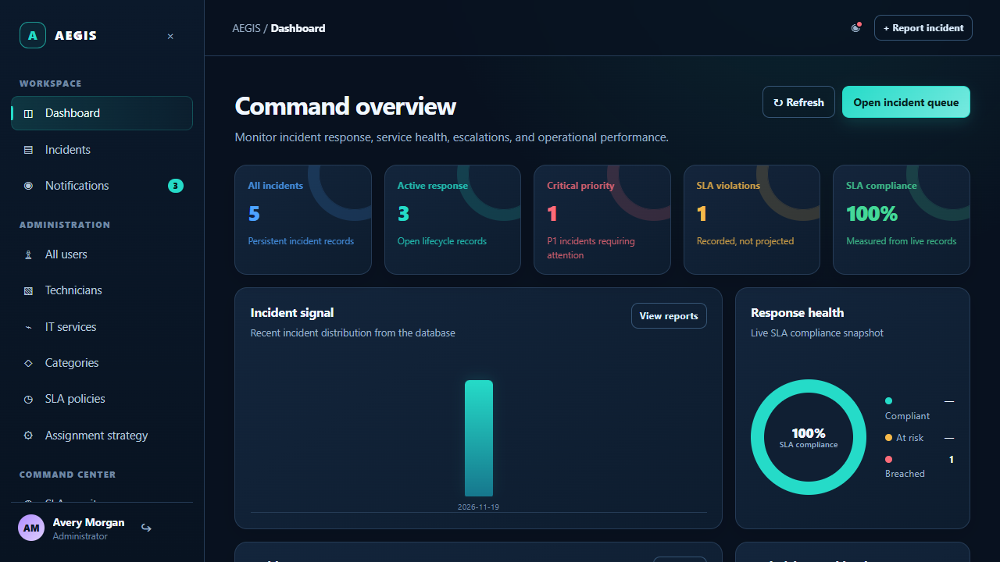
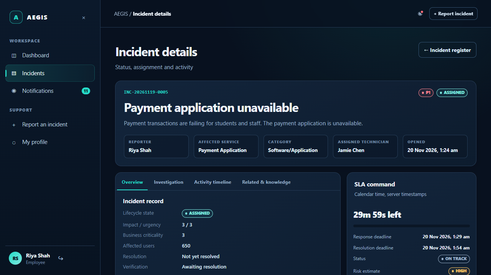

CS F213 / MAC F212 - Object-Oriented Programming
AEGIS
Intelligent IT Service Management & Incident Resolution System
Executive summary
AEGIS is an Intelligent Incident Command Center that manages an IT incident from report to closure. It gives employees a clear support portal, technicians an operational workspace, and administrators configuration, audit, SLA and reporting controls.
Problem and solution
Informal support workflows hide ownership, urgency, deadline risk and organisational learning. AEGIS supplies a persistent record, controlled lifecycle, explainable priority, strategy-based assignment, SLA monitoring, notifications and an immutable timeline.
Architecture
Browser SPA → REST controller → application services and policies → repositories → SQLite. The event publisher delivers accepted events to two notification handlers. Services append the actor, action and state changes through a separate audit service.
Major modules
| Module | Contribution |
|---|---|
| Identity and access | Hashed passwords, local sessions and server-side employee/technician/administrator authorization. |
| Incident management | Persistent lifecycle, assignments, notes, comments, resolution, verification, closure and feedback. |
| Automation | Explainable priority, two technician strategies, SLA policy/deadline monitoring, events and escalation. |
| Intelligence | Duplicate comparison, category rules, SLA risk and historical-resolution suggestions without paid AI APIs. |
| Governance | Administration, audit timeline, email simulator, reports, filters and service dependency visibility. |
Technology and object-oriented design
The application serves a JavaScript SPA and REST API from Node 24. The browser UI uses native JavaScript, HTML and CSS. The bundled HTTP, crypto, test and SQLite modules keep the local runtime self-contained. Team members can trace an operation from browser control to HTTP request, service method and database write.
SQLite supplies foreign keys, uniqueness constraints, indexes and transactions in one file. A layered monolith leaves the domain logic independently testable. Java/Spring was considered for its static typing and OOP facilities. The available Node environment provided the complete runtime with less setup. A larger deployment could migrate to PostgreSQL, shared identity and sessions, queued notifications, and multiple stateless API workers.
IncidentService controls lifecycle mutations. Strategy polymorphism selects SkillBasedAssignmentStrategy or LeastLoadedAssignmentStrategy. The Observer-style publisher dispatches to two persistent channels with one handler contract. IncidentFactory builds the initial code, time and priority calculation. Repository classes encapsulate reusable queries, and typed domain errors map to safe HTTP responses.
Intelligent features
Priority multiplies impact, urgency and service criticality, then adds an affected-user adjustment. Scores of 23 and above produce P1, 15 to 22 P2, 7 to 14 P3, and lower scores P4. Category rules list the matched keywords. Possible duplicate links require shared meaningful terms, apply service and category bonuses and are scoped by incident access. The reporter chooses whether to create a relationship.
SLA deadlines are UTC calendar targets. Warnings and breaches persist, and the monitor records escalations when the incident meets configured conditions. The risk heuristic estimates urgency from remaining time and other state. Service Pulse lists possible downstream impact from documented dependencies.
Data and security
Incident rows hold the current state and SLA snapshot. Separate tables preserve assignments, investigation notes, comments, audit events, notification deliveries, breaches and feedback. Salted scrypt protects passwords. SQLite stores hashes of expiring bearer tokens. API guards validate role and incident ownership. Demo seeding is intended for local operation.
Interface evidence


Testing and limitations
Node 24 ran 30 automated tests with 30 passes. An Edge browser smoke test exercised the three role workflows, mobile navigation, incident linking, SLA configuration, report filters, and CSV download. A separate two-process check confirmed that a new incident's code, assignment, and audit history survived a SQLite restart.
Email is simulated and SLA targets use calendar time. Production would require HTTPS, rate limiting, central identity, backup operations and deeper accessibility and load testing. Service-specific SLA overrides and a real mail gateway are future extensions.
Demonstration workflows
- Report a critical payment interruption. Inspect the category suggestion, priority score, response deadlines and assignment explanation.
- As the assigned technician, acknowledge, investigate, request information and resolve. As the reporter, reply, verify, close and submit feedback.
- Review a related report and the resulting service and SLA signals. As administrator, inspect escalations and the simulated email outbox, change assignment policy, and export a filtered report.
Conclusion
AEGIS demonstrates a maintainable OOP approach to a real operational problem: rules are protected server-side, workflow is traceable, decisions are explainable, and future assignment/notification capabilities have clear extension points.